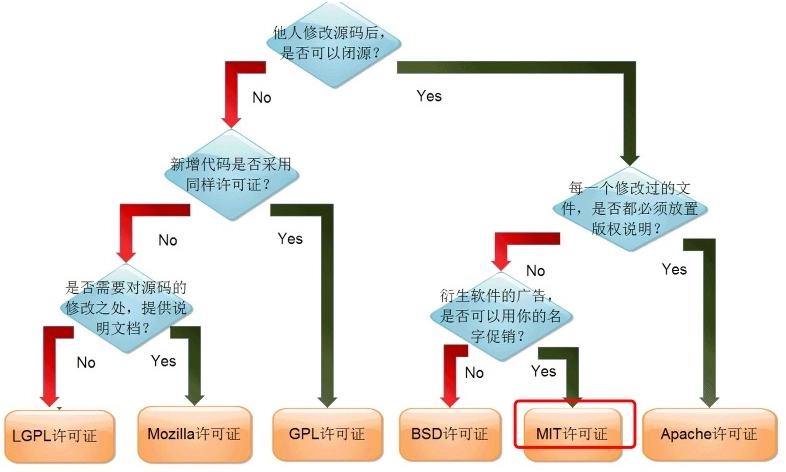
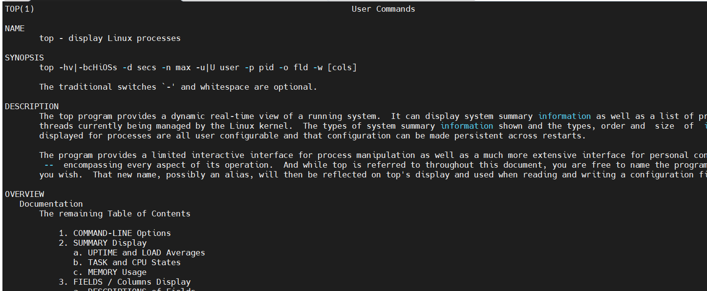
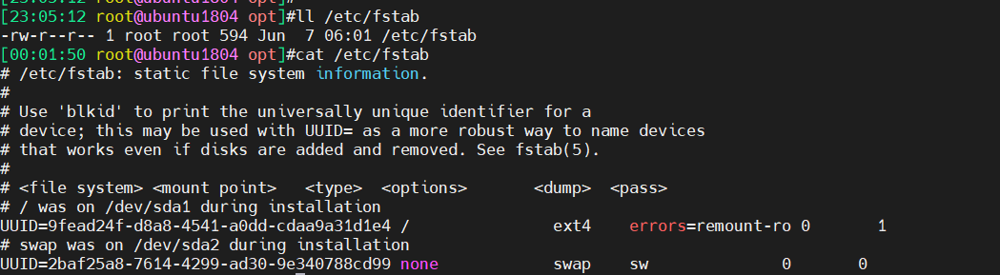

第一周作业2023-7-3
a
第一周作业
1：图文并茂解释开源许可证 GPL、BSD、MIT、Mozilla、Apache和LGPL的区别？
GPL（GNU General Public License，通用公共许可证）是一种著佐权许可证。基于GPL的软件允许商业化销售，但不允许封闭源代码。如果对遵循GPL的软件进行任何改动和/或再次开发并予以发布，只要包含了GPL的代码，则产品必须继承GPL协议，不允许封闭源代码。
BSD协议是“宽容自由软件许可证”中的一员，在软件复用上给予了最小限度的限制。BSD协议允许作者使用该协议下的资源，将其并入私人版本的软件，该软件可使用闭源软件协议发布。
MIT是一种自由软件许可证，它源自于美国麻省理工学院（Massachusetts Institute of Technology），也被称为X11协议。与BSD协议一样，MIT协议是最早的开源协议之一。被授权人有权利使用、复制、修改、合并、出版发行、散布、再授权及贩售软件及软件的副本，可根据程序的需要修改授权条款为适当的内容。在软件和软件的所有副本中都必须包含版权声明和许可声明。
Mozilla：MPL（The Mozilla Public License）是一种弱著佐权许可证，1998年初由Netscape的 Mozilla小组为其开源软件项目设计。MPL许可证不像GPL许可证那样明确表示反对软件专利，但是却明确要求源代码的提供者不能提供已经受专利保护的源代码（除非他本人是专利权人，并书面向公众免费许可这些源代码），也不能在将这些源代码以开放源代码许可证形式许可后再去申请与这些源代码有关的专利。
Apache许可证是宽松型许可证，商业软件最爱，主要条件是要求保留原始版权和许可声明，同时原始开发者/贡献者向使用者明确授予专利权。使用者可以自由修改，进行商业使用，大型项目可以不同的条款分发，没有开源要求，修改源代码需要记录变更。
LGPL(GNU Lesser General Public License，宽通用公共许可证）是一种弱著佐权许可证，LGPL与GPL相比更为宽松，允许商业化销售，不允许封闭源代码。对遵循 LGPL的软件进行任何改动和/或再次开发并予以发布时，产品必须继承LGPL许可证，不允许封闭源代码。

2：安装各发行版系统的安装(centos, rockylinux, ubuntu, 等) 【任选1个】
2.1安装ubuntu时遇到问题
无法使用root账号进行远程登陆，将/etc/ssh/sshd_config文件里面设置为‘’PermitRootLogin yes”问题依旧试了多次之后，重新看视频才发现没有设置root密码，所有不能使用root账号登录。
3：Linux中总结，1）如何通过一个简短的关键字 【man -k man -k process 】，例如process 获取相关的命令。2）通过命令的描述，选择一个命令，获取命令的man文档。【 man top】 3）解读man文档，man分几个部分？man每个部分的解释，特别是语法部分。<>, [] …等各代表什么含义。4）根据语法部分 简要的写几个操作。
3.1man -k process
会搜索所有 man 文档中名字或描述包含 process关键字的：

3.2 man top

3.3 解读man文档，man分几个部分？man每个部分的解释
3.3.1 man分为9个部分
1 Executable programs or shell commands
2 System calls (functions provided by the kernel)
3 Library calls (functions within program libraries)
4 Special files (usually found in /dev)
5 File formats and conventions eg /etc/passwd
6 Games
7 Miscellaneous (including macro packages and conventions), e.g. man(7), groff(7)
8 System administration commands (usually only for root)
9 Kernel routines [Non standard]
用户命令
系统调用
程序库函数
特殊文件帮助
文件格式
有游戏
杂项
系统管理员命令
内核运行时
3.3.2 man段落帮助说明
name: 名称
SYNOPSIS：用法格式及说明
DESCRIPTION: 命令详细描述
EXAMPLE：示例
[]：可选内容
<>：必选内容
{}：分组
…：同意内容可多次出现
3.3.3 根据语法部分 简要的写几个操作
[13:50:55 root@rocky8 ~]#cat /etc/passwd | grep -E “^s|^u”
sync:x:5:0:sync:/sbin:/bin/sync
shutdown:x:6:0:shutdown:/sbin:/sbin/shutdown
systemd-coredump:x:999:997:systemd Core Dumper:/:/sbin/nologin
systemd-resolve:x:193:193:systemd Resolver:/:/sbin/nologin
unbound:x:996:992:Unbound DNS resolver:/etc/unbound:/sbin/nologin
usbmuxd:x:113:113:usbmuxd user:/:/sbin/nologin
setroubleshoot:x:991:984::/var/lib/setroubleshoot:/sbin/nologin
saslauth:x:990:76:Saslauthd user:/run/saslauthd:/sbin/nologin
sssd:x:981:981:User for sssd:/:/sbin/nologin
sshd:x:74:74:Privilege-separated SSH:/var/empty/sshd:/sbin/nologin
user1:x:1002:1002::/home/user1:/bin/bash
user2:x:1003:1003::/home/user2:/bin/bash
[13:51:30 root@rocky8 ~]#cat /etc/passwd | tail -5 | head -3
xiaohexie:x:1000:1000:xiaohexie:/home/xiaohexie:/bin/bash
postfix:x:89:89::/var/spool/postfix:/sbin/nologin
xiaowangzi:x:1001:1001::/home/xiaowangzi:/bin/bash
4：切换到/etc/目录，列出fstab文件的详细信息，详细解决fstab一行，每个或每几个字符的详细含义。 【cd /etc; ls -l /etc/fstab】

file system：硬件设备特征，一般为路径或者UUID
mount point ：挂载路径
type：文件系统类型，比如ext2、ext3、xfs等等
options ：挂载选项，一般为默认default
dump备份，0表示不备份、1表示每天都备份、2表示不定期备份
pass：表示开机过程中是否校验扇区；0表示不要校验，1表示优先校验（一般为根目录），2表示为在1级别校验完后再进行校验；
5：简要说明FHS结构
FHS是Filesystem Hierarchy Standard（文件系统层次化标准）的缩写，FHS定义了系统中每个区域的用途、所需要的最小构成的文件和目录。比如，bin、sbin下面放的是可执行文件、dev放的是设备文件等等。
6：用自己的理解总结 文件管理，用户管理，组用户，权限管理相关的命令。文件: 【touch/rm/rmdir/cat/head/less/more】。用户及组：user/group 【useradd/userdel/usermode; groupadd/groupdel/groupmod; chsh/…】。权限 【chmod/chown/setfacl】”
touch：用于文件创建，后面跟文件名称
rm: 删除文件，-f强制删除，-r可以删除目录
rmdir：删除目录
cat：查看文件所有内容
head：显示文件内容前n行，默认10行
less：从后往前显示，翻页
more：翻页显示，从前往后
useradd：创建用户
userdel：删除用户
usermode：修改用户设置
groupadd：创建组
groupdel：删除组
groupmod：修改组属性
chsh：修改shell类型
chmod：修改文件或者文件夹的属性
chown：修改文件或者文件夹的属组/属组
setfcal：给文件或者文件夹设置特殊权限
本博客所有文章除特别声明外，均采用 CC BY-SA 4.0 协议 ，转载请注明出处！